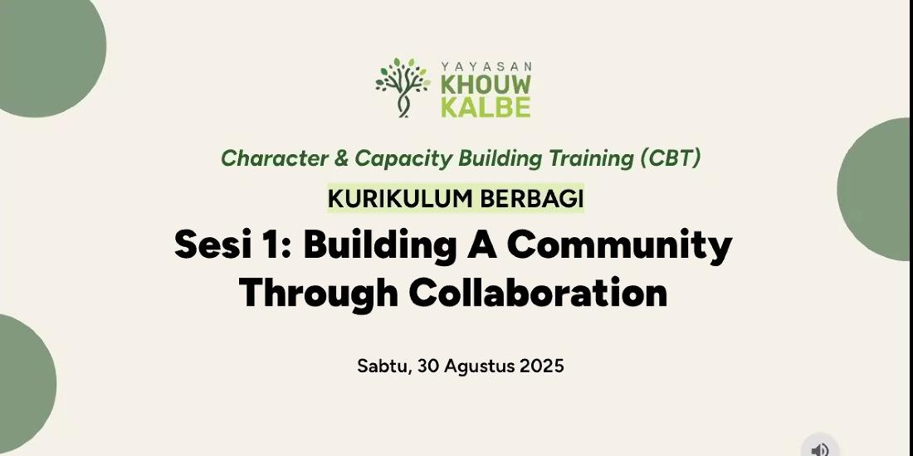
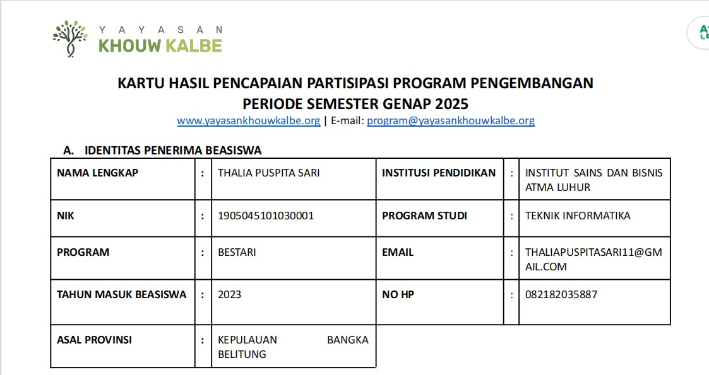
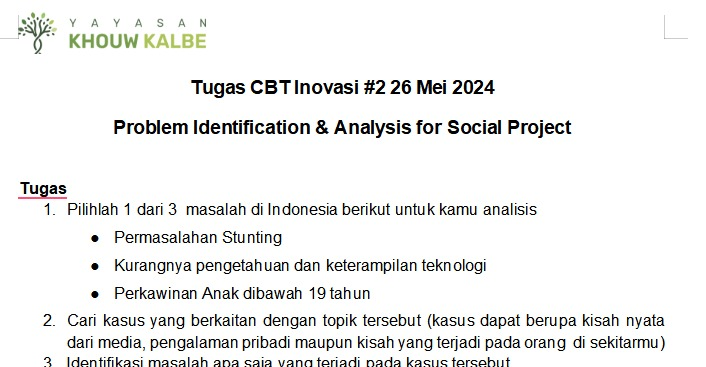
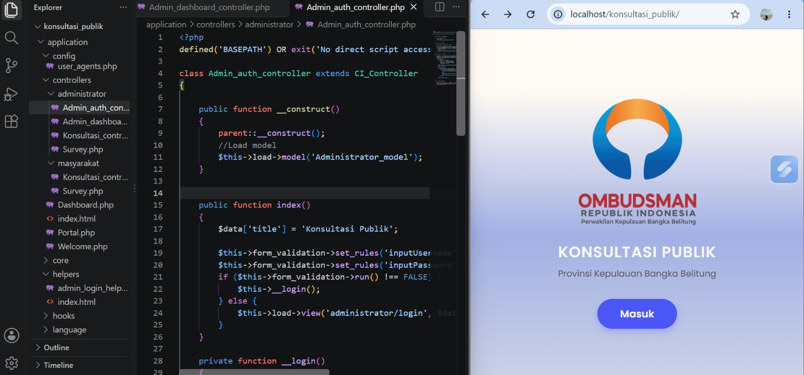
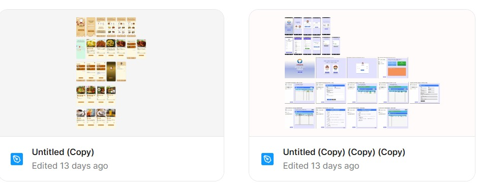
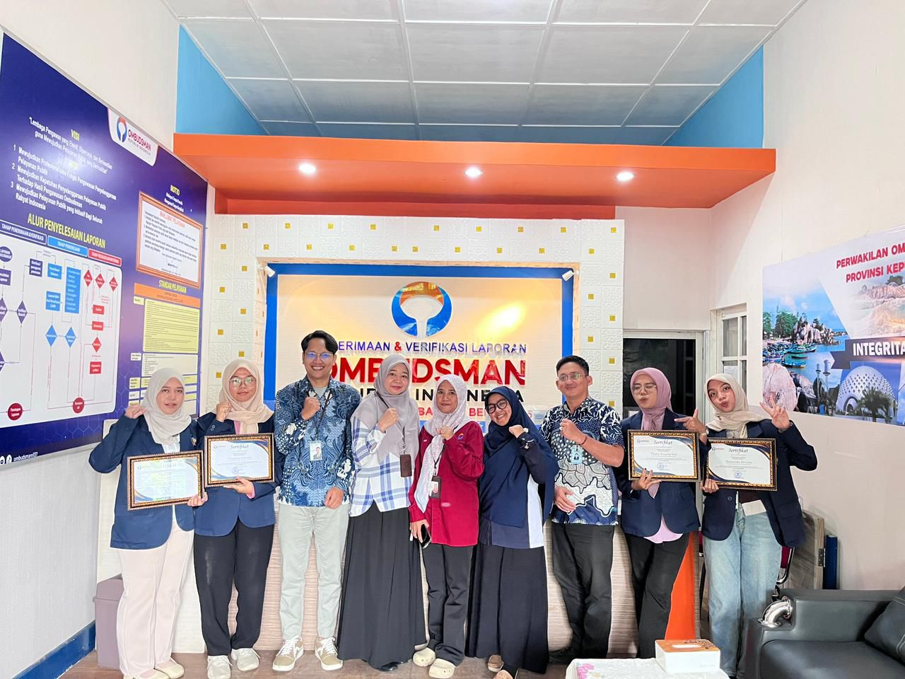
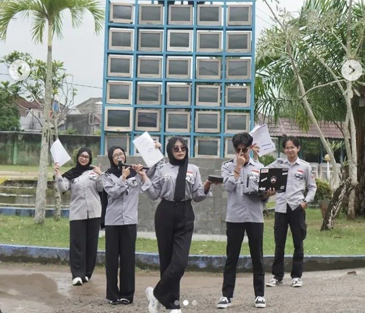
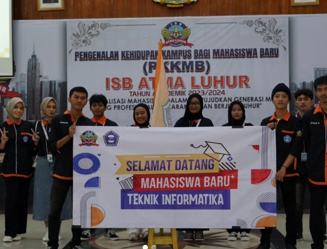
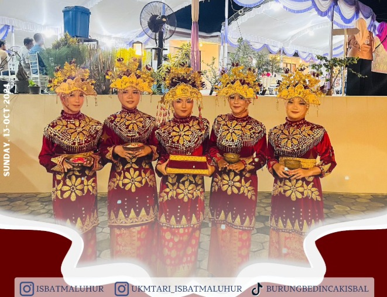

Lulusan S1 Teknik Informatika berdedikasi tinggi dengan fokus minat pada Administration, Frontend Development dan UI/UX Design. Memiliki pengetahuan dasar dalam membangun aplikasi web berbasis HTML, CSS, PHP, CodeIgniter & MySQL, serta terampil merancang antarmuka intuitif dan responsif.
Lulusan S1 Teknik Informatika dengan minat pada bidang Frontend Development dan UI/UX Design. Memiliki pemahaman dasar dalam pengembangan aplikasi berbasis web menggunakan HTML, CSS, PHP, CodeIgniter, MySQL, dan Visual Studio Code, serta ketertarikan dalam merancang antarmuka yang responsif, intuitif, dan mudah digunakan. Memiliki pengalaman mengembangkan proyek sistem informasi selama masa perkuliahan. Pribadi yang teliti, kreatif, komunikatif, bertanggung jawab, dan memiliki kemauan belajar yang tinggi, serta mampu bekerja secara individu maupun dalam tim.
Institut Sains dan Bisnis Atma Luhur - Pangkalpinang
Periode Kuliah: Sep 2022 - Okt 2026
Memiliki landasan akademis dalam bidang Teknik Informatika dengan fokus kompetensi pada pengembangan front-end, rekayasa sistem informasi berbasis web, serta penerapan prinsip-prinsip UI/UX design yang interaktif dan berorientasi pada pengguna.
Resmi lulus pada 17 Oktober 2026 dengan pencapaian Indeks Prestasi Kumulatif (IPK) 3.94 / 4.00.
Penerima Beasiswa Prestasi BESTARI dari Yayasan Khouw Kalbe (2023), melalui seleksi kompetitif berkat komitmen terhadap prestasi akademik, kepemimpinan, dan kontribusi sosial.

Klik DetailPelatihan kepemimpinan dan mentoring berkala.

Klik DetailIPK 3.94 (Cumlaude) & Sertifikasi CBT.

Klik DetailPenugasan & refleksi diri.

Dikembangkan secara lokal menggunakan Laragon / XAMPP sebagai lingkungan server lokal serta Visual Studio Code sebagai penyunting kode utama, memastikan struktur basis data dan arsitektur backend berbasis PHP serta CodeIgniter berjalan secara optimal.

Perancangan antarmuka aplikasi seluler menggunakan Figma dengan alur navigasi yang interaktif, dari halaman login hingga detail menu.
Ombudsman RI Perwakilan Kepulauan Bangka Belitung
Selama magang pada bagian Penerimaan dan Verifikasi Laporan (PVL), saya membantu proses penerimaan laporan masyarakat, verifikasi dokumen, administrasi, perumusan opini publik, serta memberikan pelayanan awal kepada masyarakat secara profesional dan teliti.

Dewan Perwakilan Mahasiswa (DPM) ISB Atma Luhur

Himpunan Mahasiswa Teknik Informatika (HIMTI)

UKM Tari Burung Bedincak ISB Atma Luhur

Daftar kompetensi, keahlian teknis, dan keterampilan pendukung yang saya kembangkan melalui pengalaman organisasi dan profesional.
Membangun aplikasi web responsif serta merancang antarmuka dan pengalaman pengguna yang interaktif.
Mengelola dokumentasi, kearsipan, tata kelola administrasi perkantoran, dan sistem pendukung.
Kemampuan memimpin tim, memecahkan masalah secara efektif, serta berkomunikasi secara profesional.
Penguasaan perangkat lunak perkantoran untuk pengolahan data harian, laporan, dan presentasi.
Dokumentasi resmi, sertifikasi kompetensi keahlian, dan kelulusan pelatihan profesional yang telah saya tempuh.
Memiliki Sertifikasi Kompetensi Resmi Computer Literate Certified Profesional (CLCP) Level III IQF pada bidang Komputer Aplikasi Perkantoran Jenjang III KKNI, yang membuktikan keahlian tingkat lanjut dalam pengoperasian teknologi informasi dan aplikasi perkantoran.
Sertifikat kelulusan resmi dari Nusatalent Batch 2 supported by Pajar Camp, yang membuktikan kompetensi dasar hingga menengah dalam pengembangan antarmuka web modern (Front-End Development).
Membuktikan kemampuan komunikasi lisan dan tulisan berbahasa Inggris untuk mendukung literasi teknologi global dan kolaborasi profesional.